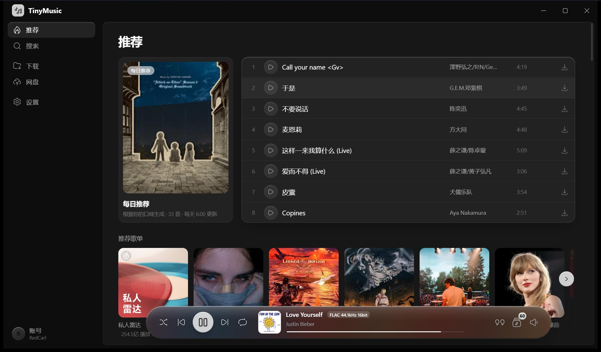

Tauri 2 · Svelte 5 · Rust
听歌，
也把歌留下。
一个 4.5 MB 的桌面音乐客户端。搜索、试听、下载、歌词、网盘都在一个窗口里； 拿不到的歌会直接置灰，而不是让你盯着「正在搜索」。

下载
安装包约 3–4 MB，新版本可在应用内直接升级。
推荐
Windows
Windows 10 / 11 · x64
推荐
macOS · Apple 芯片
macOS 11+ · arm64
推荐
macOS · Intel
macOS 11+ · x64
macOS 首次打开若提示「已损坏」，在 Finder 里右键 → 打开。 全部历史版本见 GitHub Releases。